十六进制工具的使用
安装和使用模板
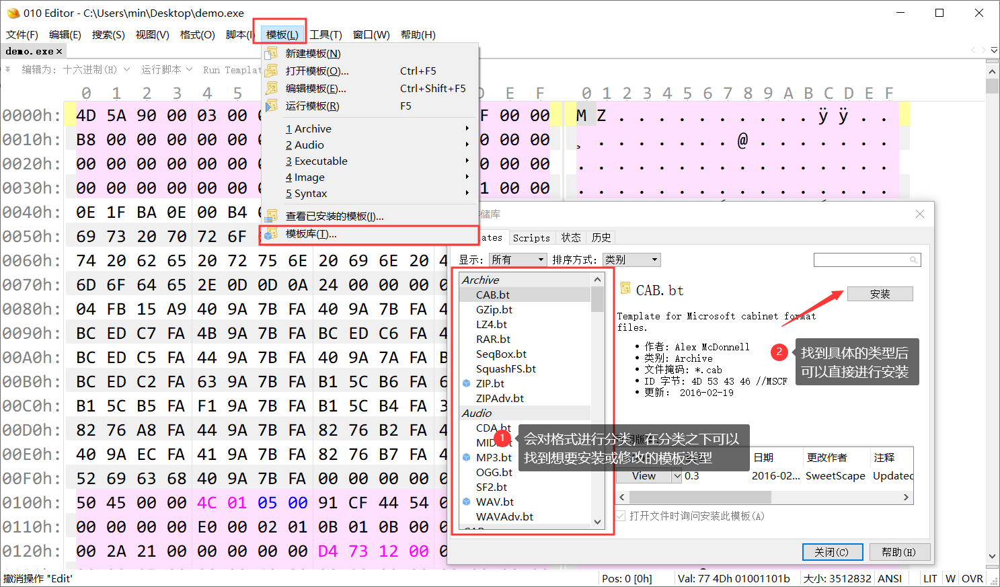
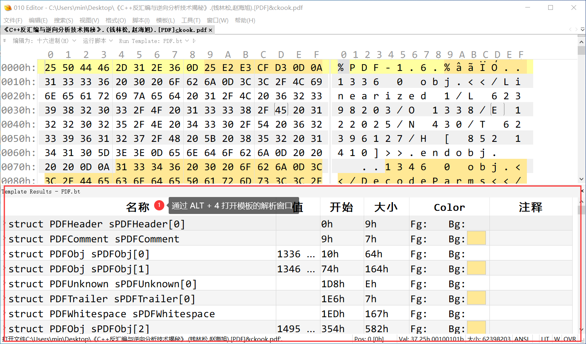
比较两个文件
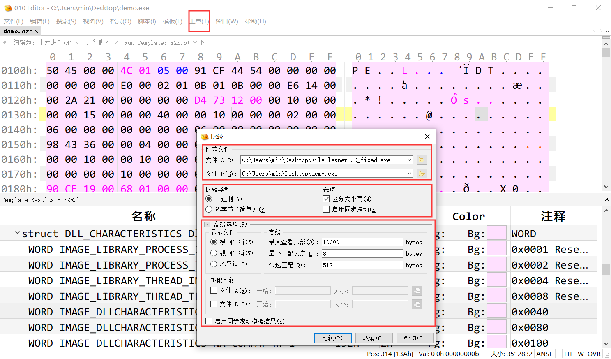
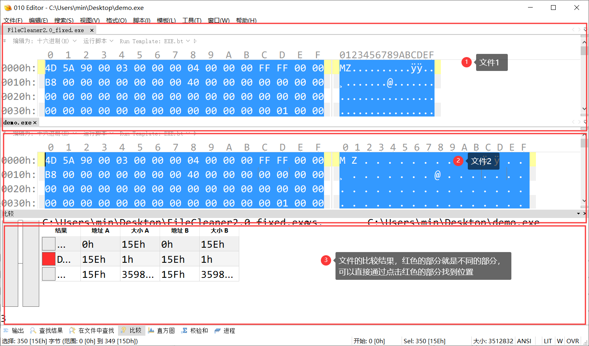
查找数据（二进制、字节）
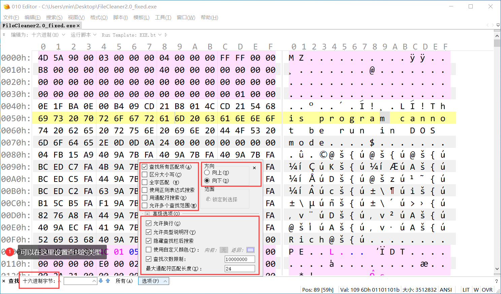
进行十六进制操作（以网易云为例）
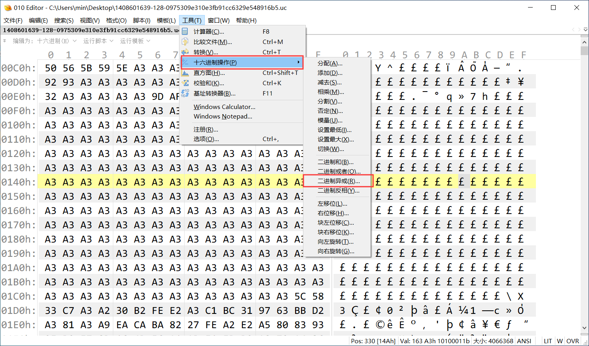
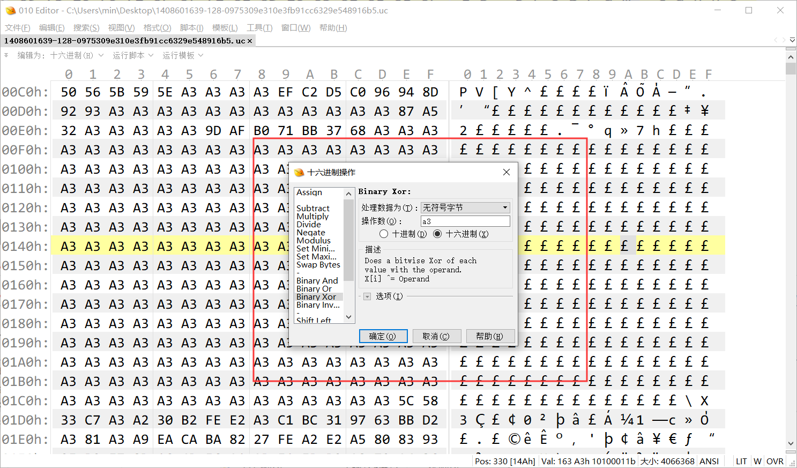
行为监控软件（火绒剑）
行为监控功能
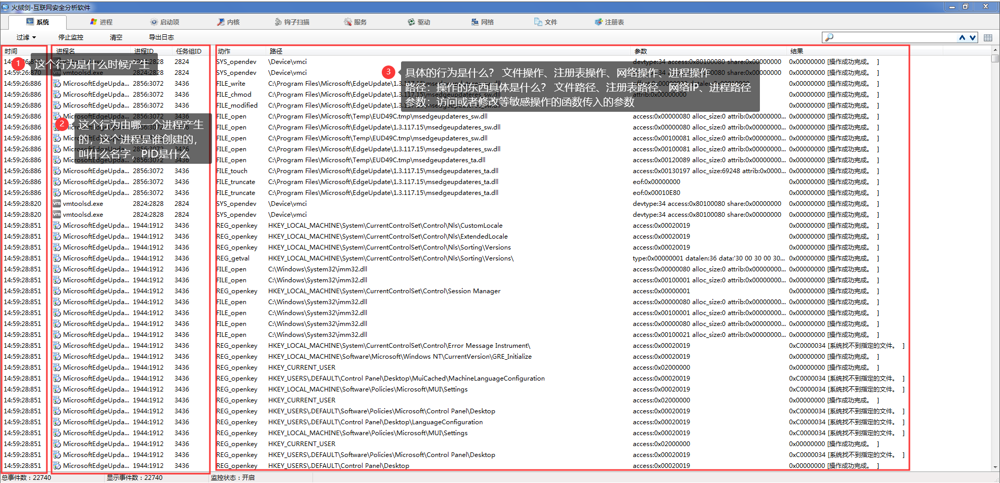
进程窗口
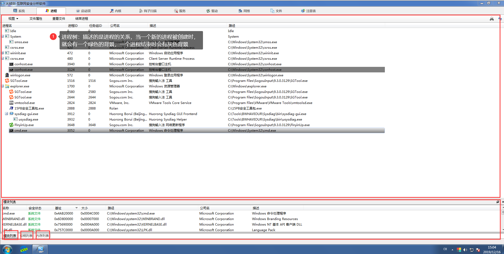
启动项操作
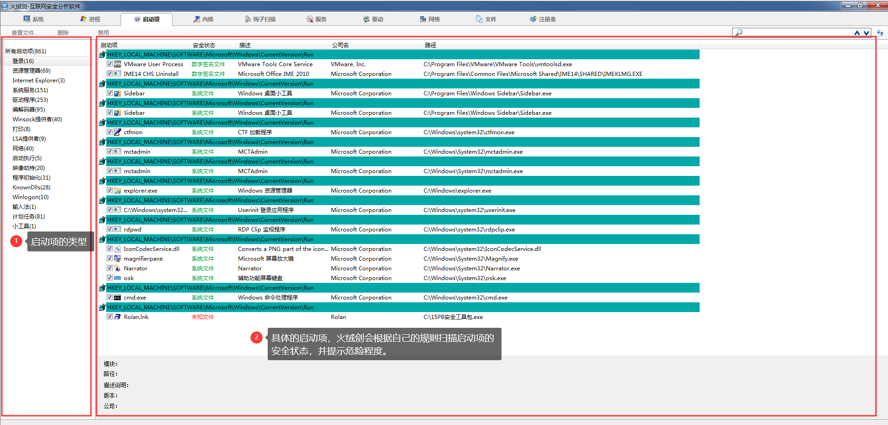
查看系统钩子
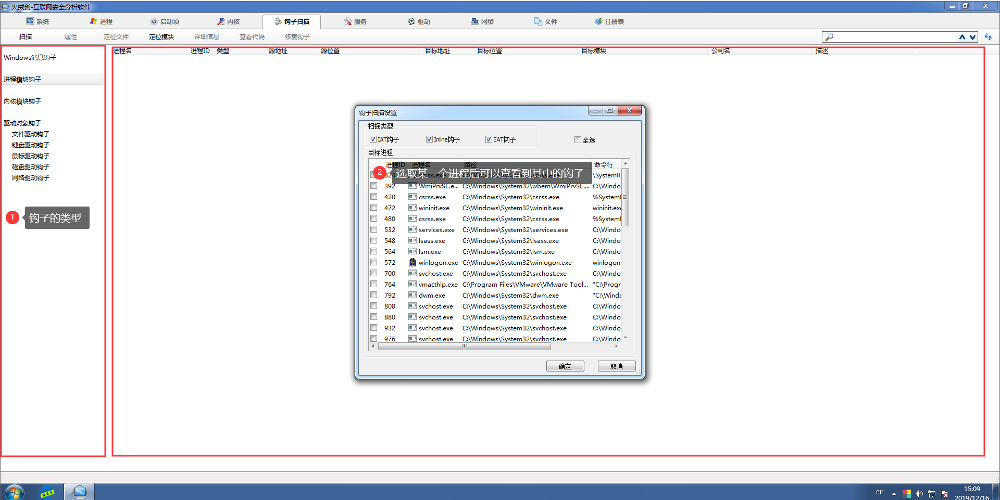
常见的抓包工具
- WireShark：一个专业用于抓包的软件，使用的是一个开源的 WinPCAP工具包实现的网络过滤驱动
- WSExplorer：一个用于抓取解析指定程序网络流量的工具，使用 HOOK API 的方式实现
PE查看工具
LordPE：可以用于快速的修改和查看一个 PE 文件
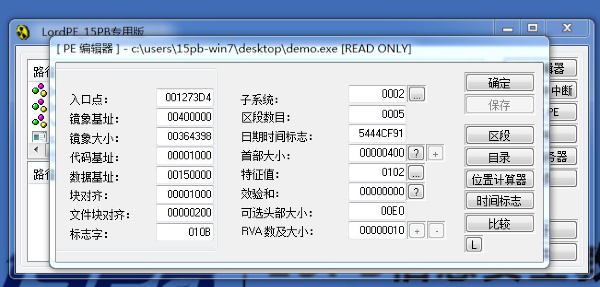
Exeinfo：一个查看 exe 信息的工具，更新比较频繁，可以用于查壳
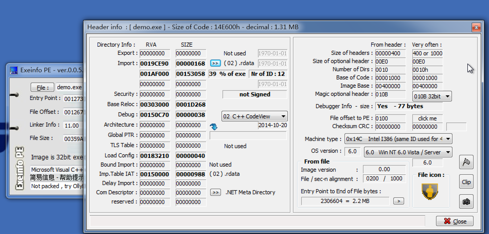
PEID：查壳工具，原理是使用特征码进行查看
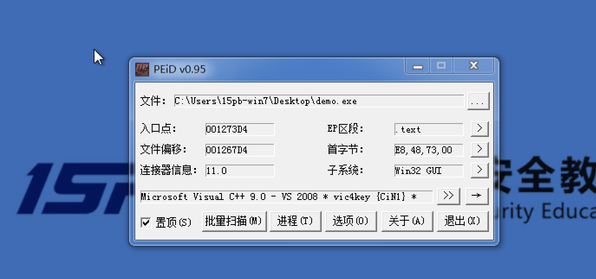
DIE：查壳工具，支持插件，支持中文，更新频繁，跨平台（QT）
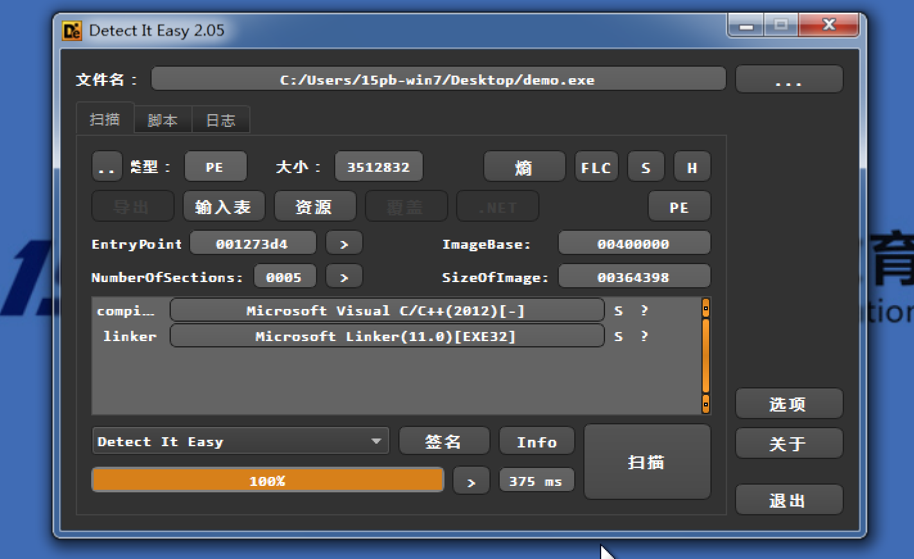
Dependency：模块的依赖性检查工具
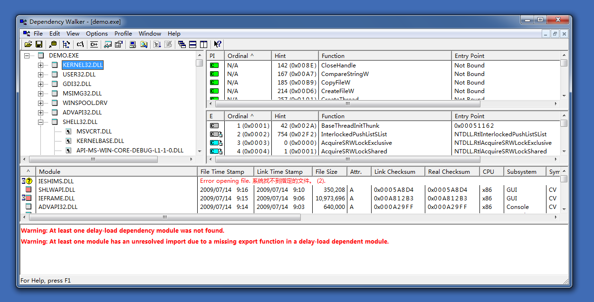
Resource Hacker：资源修改工具，可以修改对话框等的风格
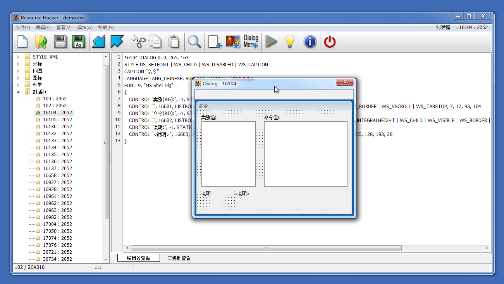
ARK工具：反 Rootkit 工具
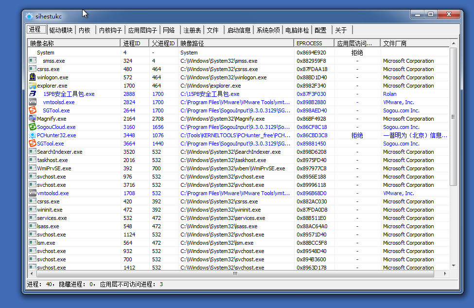